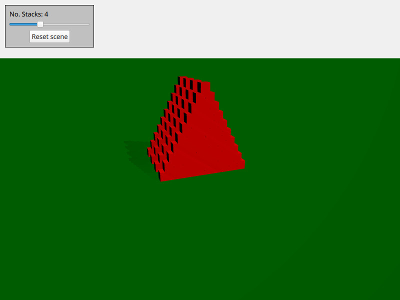

Qt Quick 3D Physics - Cannon Example
Demonstrates how to spawn physical objects.

This example demonstrates how to create and delete physical objects on demand. The scene consists of a number of stacks of boxes. You can move around by using WASD and the mouse and shoot a ball by pressing space.
The scene is setup with the usual Qt Quick 3D objects like view, camera and light:
PerspectiveCamera { id: camera position: Qt.vector3d(-4000, 5000, 10000) eulerRotation: Qt.vector3d(-20, -20, 0) clipFar: 500000 clipNear: 100 } DirectionalLight { eulerRotation: Qt.vector3d(-45, 45, 0) castsShadow: true brightness: 1 shadowMapQuality: Light.ShadowMapQualityVeryHigh shadowFactor: 100 }
We also add a static floor:
StaticRigidBody { eulerRotation: Qt.vector3d(-90, 0, 0) collisionShapes: PlaneShape {} Model { source: "#Rectangle" scale: Qt.vector3d(2000, 2000, 1) materials: PrincipledMaterial { baseColor: "green" } castsShadows: false receivesShadows: true } }
We create a Node we use as the spawner of objects and put inside our view:
Node { id: shapeSpawner property var instancesBoxes: [] property var instancesSpheres: [] property int stackCount: 0 property var boxComponent: Qt.createComponent("Box.qml") property var sphereComponent: Qt.createComponent("Sphere.qml") function createStack(stackZ, numStacks) { let size = 10 let extents = 400 for (var i = 0; i < size; i++) { for (var j = 0; j < size - i; j++) { let x = j * 2 - size + i let y = i * 2 + 1 let z = 5 * (stackZ - numStacks) let center = Qt.vector3d(x, y, z).times(0.5 * extents) let box = boxComponent.incubateObject(shapeSpawner, { "position": center, "xyzExtents": extents }) instancesBoxes.push(box) } } } function createBall(position, forward) { var diameter = 600 var speed = 20000 let settings = { "position": position, "sphereDiameter": diameter } let sphere = sphereComponent.createObject(shapeSpawner, settings) sphere.setLinearVelocity(forward.times(speed)) instancesSpheres.push(sphere) if (sphere === null) { console.log("Error creating object") } } function reset() { // Only run method if previous stack has been created fully for (var i = 0; i < instancesBoxes.length; i++) if (!instancesBoxes[i].object) return instancesSpheres.forEach(sphere => { sphere.collisionShapes = [] sphere.destroy() }) instancesBoxes.forEach(box => { box.object.collisionShapes = [] box.object.destroy() }) instancesSpheres = [] instancesBoxes = [] for (var stackI = 0; stackI < stackSlider.value; stackI++) { shapeSpawner.createStack(stackI, stackSlider.value) } } }
We have three methods: createStack for creating a stack, createBall for creating a ball with velocity and reset for resetting the scene. The actual box and sphere that is spawn is stored in their own qml files (box.qml and sphere.qml).
Files: